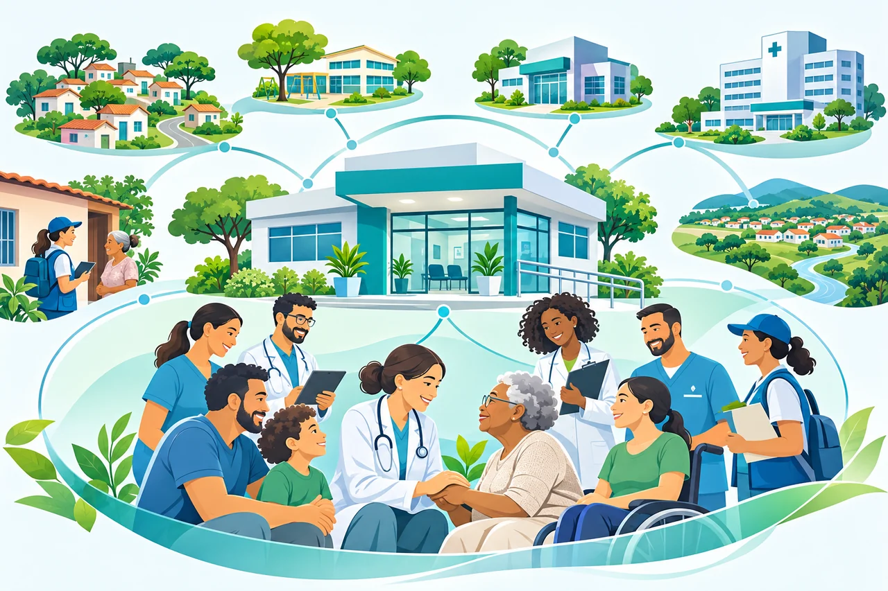

Atenção Primária à Saúde
A Atenção Primária à Saúde (APS) não é uma versão simplificada do hospital: é uma forma própria de organizar o sistema em torno de pessoas, famílias e territórios. Seu trabalho combina resposta a problemas novos, acompanhamento ao longo do tempo, prevenção, reabilitação, cuidados paliativos e articulação com outros serviços. A APS precisa acolher a demanda do dia e, ao mesmo tempo, responder por necessidades que ainda não se transformaram em consultas. No SUS brasileiro, a Atenção Básica é reconhecida como principal porta de entrada e centro de comunicação da Rede de Atenção à Saúde (RAS). [1]
1. O que caracteriza a APS
A APS é frequentemente definida por quatro atributos essenciais: acesso de primeiro contato, longitudinalidade, integralidade e coordenação do cuidado. A eles se associam orientação familiar, orientação comunitária e competência cultural. Os atributos não descrevem apenas a intenção do serviço: precisam ser reconhecíveis no percurso real de uma pessoa pela rede. A Organização Mundial da Saúde (OMS) explicita atualmente cinco funções centrais do cuidado primário, incluindo o cuidado centrado na pessoa. [2]
- Primeiro contato: uma pessoa com problema novo consegue procurar sua equipe em tempo oportuno, sem exigência de conhecer previamente o diagnóstico; acolhimento não se reduz a marcar uma consulta futura.
- Longitudinalidade: a equipe acompanha a pessoa ao longo dos anos, ainda que variem os problemas, os profissionais ou as modalidades de encontro; depende de vínculo e de informação clínica recuperável.
- Integralidade: a equipe reconhece necessidades físicas, psíquicas e sociais, oferece ações pertinentes à sua capacidade e identifica o que deve ser compartilhado com outros serviços.
- Coordenação: resultados de exames, encaminhamentos, internações, medicamentos e retornos compõem um percurso inteligível; o encaminhamento não encerra a responsabilidade assistencial.
- Centralidade da pessoa e do território: escolhas de cuidado consideram objetivos, preferências, condições materiais, redes familiares e riscos existentes na comunidade.
A APS integra uma abordagem mais ampla de atenção primária que, segundo a OMS, articula serviços integrados de saúde, políticas intersetoriais e participação de pessoas e comunidades. Isso significa que boa parte dos problemas encontrados no consultório também exige respostas de educação, saneamento, habitação, proteção social e participação comunitária. [3]
2. Organização territorial e responsabilidade sanitária
O território não é apenas a área desenhada no mapa ou a quantidade de pessoas cadastradas. É o conjunto dinâmico de relações entre condições de moradia, deslocamento, trabalho, acessibilidade, vulnerabilidades e serviços. Conhecê-lo requer combinar registros, visitas, escuta comunitária, observação e indicadores. A territorialização é uma diretriz da Política Nacional de Atenção Básica (PNAB), assim como a população adscrita, a longitudinalidade e a participação da comunidade. [4]
Uma equipe pode, por exemplo, descobrir que a baixa adesão ao acompanhamento de hipertensão decorre menos de desconhecimento da doença e mais da impossibilidade de transporte, de horários incompatíveis com o trabalho ou de problemas de abastecimento de medicamentos. Essas explicações são hipóteses de investigação local: não devem ser assumidas como fatos sem conhecer as pessoas e os dados do território.
Para transformar o reconhecimento territorial em ação, o planejamento pode manter quatro registros vivos: população acompanhada e suas necessidades; recursos comunitários e intersetoriais; barreiras concretas de acesso; e fluxos de referência e contrarreferência. O cadastro deve apoiar decisões, não converter indivíduos em números desvinculados de suas circunstâncias.
3. Acesso, agenda e acolhimento
Organizar acesso exige equilibrar atendimento no mesmo dia, consultas programadas, acompanhamento de grupos prioritários, visitas domiciliares e contatos de continuidade. Uma agenda inteiramente ocupada por retornos antigos dificulta o primeiro contato; uma agenda inteiramente aberta para demanda espontânea enfraquece a longitudinalidade. A solução depende do perfil epidemiológico, da composição da equipe e de observação do fluxo real, e não de uma proporção universal de vagas.
O acolhimento é um processo de escuta, avaliação de necessidade e encaminhamento responsável. Pessoas com sinais de gravidade devem ser avaliadas segundo protocolos assistenciais locais e encaminhadas para o nível adequado, sem atraso provocado pela lógica administrativa da agenda. Nos problemas não urgentes, a equipe pode resolver, orientar, programar acompanhamento ou coordenar a avaliação especializada, documentando as decisões.
Um instrumento de avaliação do acesso deve separar demanda percebida de acesso efetivo: tempo entre pedido e atendimento, proporção de pessoas que deixam de ser atendidas, retornos não concluídos e diferenças de acesso entre grupos populacionais. Contar consultas realizadas não é suficiente para medir se as necessidades foram atendidas. O conjunto atual de indicadores da OMS distingue acesso, disponibilidade, qualidade, equidade e resultados. [5]
4. Cuidado longitudinal e raciocínio clínico
A longitudinalidade muda a interpretação dos dados. Uma pressão arterial, uma queixa vaga ou um resultado limítrofe têm significados diferentes conforme a história da pessoa, a evolução temporal e sua exposição a riscos. O acompanhamento repetido pode favorecer reconhecimento precoce de mudanças, revisão de hipóteses, decisões compartilhadas e uso mais criterioso de exames.
A abordagem clínica da APS trabalha com problemas indiferenciados e incerteza. Em vez de exigir que toda consulta produza um diagnóstico fechado, pode registrar: hipótese principal, diagnósticos alternativos relevantes, sinais de alerta, plano de seguimento e condições para reavaliar. O tempo — quando acompanhado de orientação clara e segurança — pode integrar a estratégia diagnóstica; não justifica deixar de investigar urgências ou sinais de risco.
Uma lista longitudinal de problemas deve distinguir condições ativas, histórico relevante, fatores de risco e questões já resolvidas. A conciliação de medicamentos, o contexto familiar, as preferências e as metas pactuadas devem ser revistos quando houver mudança clínica ou transição entre serviços. A continuidade existe quando essa informação está acessível a quem presta o próximo cuidado, com proteção de dados e controles de acesso adequados.
5. Integralidade e trabalho interprofissional
Uma pessoa com diabetes e limitação funcional pode precisar simultaneamente de ajuste terapêutico, orientação alimentar, exame de pés, avaliação odontológica, suporte psicológico, atividade física e assistência social. A integralidade não exige que um único profissional execute tudo. Exige que necessidades pertinentes sejam reconhecidas, que a equipe tenha responsabilidades definidas e que os encaminhamentos sejam acompanhados.
Reuniões clínicas breves, planos compartilhados e comunicação estruturada entre medicina, enfermagem, agentes comunitários, saúde bucal e equipes multiprofissionais reduzem fragmentação organizacional. O valor de cada interação depende de sua contribuição ao cuidado: multiplicar formulários e encontros sem mudança de conduta pode aumentar o trabalho sem ampliar a qualidade.
A orientação familiar requer consentimento, respeito à autonomia e atenção aos conflitos e assimetrias de poder. Visitas domiciliares devem seguir critérios de necessidade, proteção da equipe e privacidade da pessoa; não equivalem a vigilância indiscriminada do cotidiano.
6. Coordenação da rede e transições assistenciais
A APS se conecta a ambulatórios especializados, hospitais, urgência, assistência farmacêutica e pontos da rede de atenção psicossocial. Uma referência útil contém motivo clínico, pergunta dirigida ao especialista, dados relevantes, tratamentos tentados e grau de urgência. Um retorno adequado informa hipótese ou diagnóstico, decisões tomadas, medicamentos alterados, sinais de alerta e responsabilidades futuras.
Considere uma pessoa idosa com insuficiência cardíaca que recebeu alta hospitalar. Uma transição segura inclui conferência da lista de medicamentos, identificação de exames pendentes, orientação sobre sinais de descompensação e definição de quem fará o acompanhamento. O exemplo é ilustrativo e não substitui protocolos clínicos específicos. O problema não é apenas conseguir a consulta: é manter um plano inteligível durante a passagem entre serviços.
Coordenação não significa impedir o acesso direto a outros pontos da rede quando esse acesso é necessário. Significa reconstruir a continuidade depois do contato, respeitando escolhas, autonomia e organização local dos fluxos.
7. Informação clínica, tecnologia e interoperabilidade
O prontuário longitudinal deve representar encontros, problemas, observações, prescrições, encaminhamentos e decisões, mantendo autoria, data, proveniência e histórico de alterações. Uma tela eficiente permite recuperar informação relevante sem obrigar a equipe a percorrer registros desconectados. Isso também significa permitir correção documentada de erros, controlar perfis de acesso e resguardar a confidencialidade.
O Ministério da Saúde disponibiliza o manual do Prontuário Eletrônico do e-SUS APS e orientações para sistemas que realizam integração. A compatibilidade de sistemas alternativos envolve modelos de dados e especificações de intercâmbio, não apenas aparência semelhante à interface oficial. [6]
Ferramentas digitais podem automatizar lembretes, conferência de resultados e preparação de relatórios, mas devem evitar excesso de alarmes, duplicação de registros e decisões opacas. Sistemas de apoio não devem substituir avaliação clínica. Para qualquer aplicação pública de demonstração, use somente dados fictícios e deixe explícito que ela não integra o prontuário real do SUS.
8. Como avaliar qualidade sem reduzir o cuidado a indicadores
Um painel de APS deve distinguir estrutura, processo, resultado e equidade. Estrutura inclui equipe, salas, conectividade e insumos; processo inclui continuidade, acompanhamento e comunicação; resultado inclui desfechos clínicos e experiência das pessoas; equidade avalia diferenças entre grupos e territórios. A OMS recomenda selecionar indicadores considerando contexto, prioridades e maturidade do sistema. [5]
- Acesso oportuno: mediana e distribuição do tempo entre solicitação e avaliação, com estratificação por território e perfil de necessidade.
- Longitudinalidade: proporção de pessoas com equipe de referência identificável e possibilidade de continuidade do seguimento.
- Coordenação: proporção de encaminhamentos com retorno documentado e exames críticos acompanhados até a decisão.
- Segurança: revisão de erros de medicação, resultados não comunicados e eventos evitáveis, com abordagem de aprendizagem e não de punição automática.
- Experiência: facilidade de comunicação, compreensão do plano e participação nas decisões.
- Equidade: diferenças de acesso e seguimento por idade, vulnerabilidade, deficiência e distância, quando esses dados puderem ser tratados de forma ética e segura.
Indicadores podem melhorar por alterações no registro sem que o cuidado melhore na mesma proporção; também podem piorar quando uma equipe passa a registrar necessidades anteriormente invisíveis. Assim, tendências quantitativas devem ser cotejadas com auditoria de prontuários, observação dos fluxos e escuta de usuários e trabalhadores.
No Brasil, regras de cofinanciamento e metodologias de desempenho mudam. A Portaria GM/MS nº 3.493/2024 inaugurou uma metodologia de cofinanciamento, posteriormente alterada por normas como a Portaria GM/MS nº 7.799/2025; notas técnicas e fichas de indicadores de 2026 devem ser consultadas antes de qualquer cálculo operacional ou afirmação sobre pagamento. Esta página não fixa fórmula financeira como se fosse permanente. [7]
9. Evidências e limites de causalidade
Na revisão clássica de Starfield, Shi e Macinko (2005), sistemas e experiências de cuidado primário mais fortes foram associados a melhores indicadores de saúde e distribuição mais equitativa de resultados. Trata-se de uma síntese de múltiplos desenhos de estudo; associações e comparações entre sistemas não demonstram que qualquer ação isolada produza o mesmo efeito em todas as populações. [8]
Uma revisão publicada em 2025 sobre a Estratégia Saúde da Família no Brasil encontrou associações favoráveis sobretudo para mortalidade infantil e algumas causas sensíveis à atenção primária, mas também resultados heterogêneos ou ausentes em outros desfechos e populações. Essa heterogeneidade importa: cobertura nominal, qualidade da implementação, contexto social e capacidade da rede não são variáveis intercambiáveis. [9]
Ao avaliar uma intervenção municipal, descreva população, período, definição de exposição, comparação, possíveis confundidores e mudanças simultâneas no sistema. Séries temporais sem grupo comparável podem indicar uma tendência, mas não atribuem causalidade com segurança. Os resultados devem informar prioridades de melhoria e não ser usados para classificar equipes sem considerar incerteza e contexto.
10. Estudo de caso: uma linha de cuidado que atravessa serviços
Caso fictício. Uma pessoa de 62 anos, com hipertensão, diabetes, dificuldades de deslocamento e internação recente, procura a unidade por mal-estar inespecífico. O objetivo não é sugerir um tratamento específico, mas demonstrar como os atributos da APS alteram a organização do cuidado.
Encontro inicial. A equipe avalia necessidade clínica e sinais de gravidade, reconcilia medicamentos, atualiza o problema principal e identifica dificuldades de acesso. O plano registrado explicita orientações, condições de retorno e quem acompanhará exames ou encaminhamentos.
Seguimento. A enfermagem e o médico revisam o plano conforme necessidades; agentes comunitários podem contribuir com informação territorial e contato, respeitando privacidade e consentimento. Exames e consultas especializadas são acompanhados até a devolutiva, não apenas marcados.
Transição. Se ocorre novo atendimento de urgência, a equipe de referência retoma o histórico e reconcilia decisões. A pessoa participa da definição de metas realistas. A qualidade do processo pode ser observada em indicadores de tempo, continuidade, comunicação e percepção de segurança, mas deve ser avaliada também por sua experiência concreta.
A ilustração a seguir representa a equipe, a unidade, o território e a rede de cuidado. É uma representação conceitual produzida para este artigo, sem pacientes ou serviços reais.

11. Roteiro para desenvolver um serviço ou aplicação digital de APS
Etapa 1 — Problema e escopo. Descrever a necessidade assistencial verificável: seguimento perdido, resultado não comunicado, referência sem contrarreferência ou dificuldade de orientação ao usuário. Definir o que a ferramenta não tentará resolver.
Etapa 2 — Mapa de atores e fluxos. Representar pessoa, familiares autorizados, equipe, recepção, regulação, farmácia, assistência social e outros serviços; separar dados clínicos de tarefas administrativas.
Etapa 3 — Modelo longitudinal. Planejar problemas ativos, encontros, objetivos compartilhados, histórico de encaminhamentos e trilhas de auditoria. Não usar dados reais em protótipos públicos.
Etapa 4 — Interface de trabalho. Prototipar busca, linha do tempo, resumo do cuidado, pendências e comunicação entre serviços com profissionais de diferentes funções. Testar em baixa conectividade e telas pequenas.
Etapa 5 — Segurança e avaliação. Definir responsabilidades por acesso, base legal para tratamento de dados, registro de auditoria, retenção, correção e procedimentos de incidentes. Validar funcionamento e usabilidade antes de qualquer afirmação de conformidade.
Etapa 6 — Melhoria contínua. Medir necessidades não atendidas, eventos evitáveis e carga de trabalho adicional. Ajustar a ferramenta com avaliação qualitativa e quantitativa; a digitalização só é justificável quando apoia cuidado melhor e mais seguro.
Leituras e referências
- [1] Ministério da Saúde. Atenção Primária à Saúde — Secretaria de Atenção Primária. Página institucional, consultada em novembro de 2026.
- [2] OMS. Integrated primary care for UHC — cinco funções do cuidado primário. Página técnica.
- [3] OMS. Primary health care — ficha informativa. Atualização de 5 dez. 2025.
- [4] Ministério da Saúde. Portaria nº 2.436/2017 — Política Nacional de Atenção Básica. Consultar redação consolidada vigente.
- [5] OMS/UNICEF. Primary health care measurement framework and indicators. 2022.
- [6] Ministério da Saúde. Manual do Prontuário Eletrônico e-SUS APS. Versão 5.5, jul. 2026.
- [7] Ministério da Saúde. Indicadores e notas técnicas de APS. Página atualizada em out. 2026.
- [8] Starfield B, Shi L, Macinko J. Contribution of primary care to health systems and health. Milbank Quarterly. 2005;83(3):457–502. DOI: 10.1111/j.1468-0009.2005.00409.x.
- [9] Aquino R e colaboradores. Impacts of the Family Health Strategy on the health status of the Brazilian population: a literature review. Ciência & Saúde Coletiva. 2025.
Nota editorial
Conteúdo para estudo e discussão sobre organização assistencial. Não substitui julgamento clínico, protocolos locais, normas vigentes nem avaliação jurídica e regulatória de sistemas de informação. Revisão bibliográfica: 8 de novembro de 2026; fontes vinculadas para conferência de atualizações.